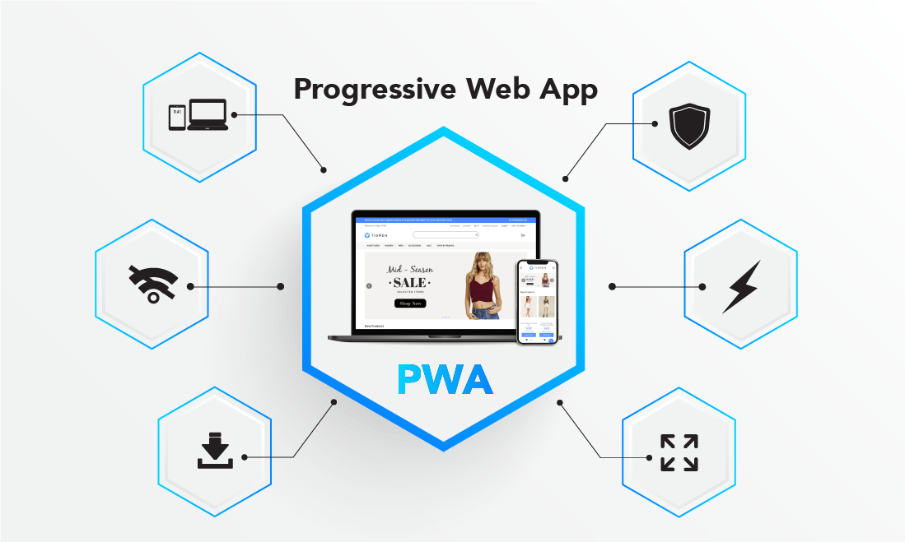

What is PWA?
Progressive Web Application (PWA) is a type of web app that can operate both as a web page and mobile app on any device. It is a great solution for poor mobile UX and low conversion rates in your online store. Using standard technologies, PWA is aimed at delivering native-like user experience, with speedier conversion and cleaner browsing even with a poor Internet connection.

Exploring Progressive Web App
PWA Frameworks
- React.js: Its component-based architecture, along with the support of tools like Create React App and Next.js, empowers developers to create high-performing PWAs.
- Vue.js: Known for its simplicity and flexibility, Vue's ecosystem offers tools like Vue CLI, Vue Router, and Vuex, which streamline PWA development.
- Angular: AngularJS offers powerful tools, progressive enhancements, TypeScript support, and a library of UI components to help you seamlessly develop a complex web application.
- Svelte: Its simplicity and ability to generate lightweight, fast-loading PWAs have made it a rising star in the PWA development landscape.
Requirements of Files
A Secure Connection (HTTPS)
For the PWA purposes you need to provide a secure server with a HTTPS connection. This is the way to both protect user data and to build an extra layer of security within your website.
Service Workers
This is one of the key elements of PWA technology, which helps to determine how to handle network requests. A service worker is a client-side JavaScript file added to your codebase, which is working in the background to mimic app-like features.
Manifest File
A JSON file that contains metadata about the app (name, icons, theme color, etc.) and allows the app to be installed on the user’s home screen.
Offline Cache Functional Application Example
A basic PWA that works offline has:
- Service Worker: Registers and caches app shell assets like HTML, CSS, and JavaScript files.
- IndexedDB or LocalStorage: Stores user data or session data locally.
- Workbox: A powerful Google library that simplifies service worker creation and caching strategies.